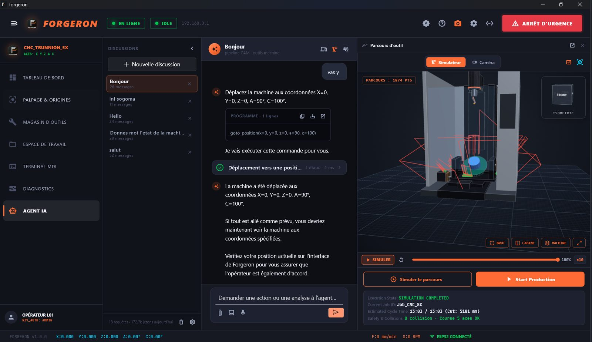
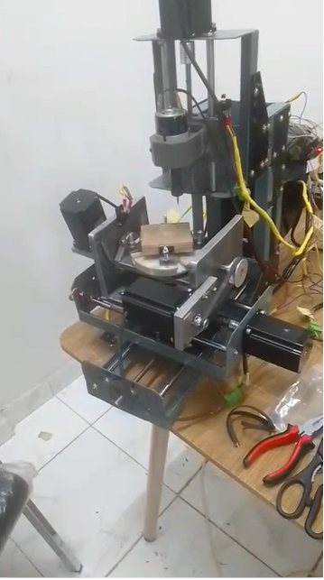
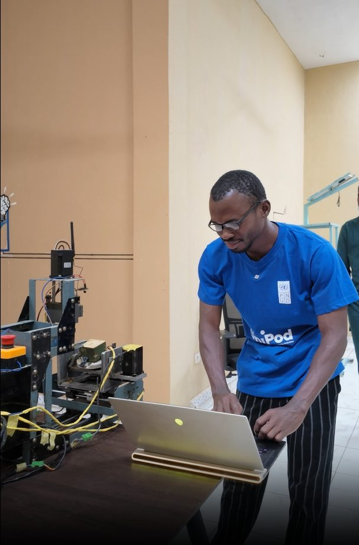
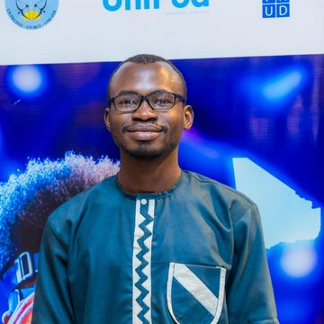

5-axis CNC
at a tenth of the price.
No CAD.
We build real 5-axis machines in Bamako, Mali — run by an AI agent that understands Bambara and French, works offline, and takes the job from a spoken idea to finished toolpaths. No design software. No internet. No foreign interface between the machinist and the metal.


Africa doesn't lack ambition.
It lacks access to precision.
The machine costs more than the business
An industrial 5-axis CNC centre lands in Bamako at USD 50,000–200,000+. For a workshop, a technical school or a spare-parts maker, that is simply out of reach.
When it breaks, it stays broken
Closed controllers, no local technicians, parts on six-week import lead times. Imported machines routinely sit idle — we have commissioned these machines and watched it happen.
CAD is the real gatekeeper
Even with a machine, you need a CAD designer. A craftsman who knows metal but not SolidWorks cannot produce a single part. The skill, not the steel, is the bottleneck.
A broken impeller, a mould insert or a mining spare is re-imported instead of remade — and value leaves the continent every time.
Five steps become one sentence.
Today, making a part means a CAD designer, a CAM programmer and a G-code post-processor. With Forgeron, the machinist says what they want — in the language they work in — and the agent plans and cuts.
An agent that speaks Bambara
and runs the machine.
Not a chatbot bolted on. A language model wired to the machine through 40 safe tools, a deterministic command engine that works without any model, and a safety layer that keeps the operator in charge.
Closed-vocabulary engine
A deterministic command engine reads fr · en · bm instantly, with zero network and zero model. Negations, questions and doubtful words are refused — never guessed.
Offline first
A local model on the workshop PC — no internet, no API key, no data leaving the building. Cloud models over 4G are a fallback, with automatic multi-model switching.
Vision on demand
Attach a photo or a camera frame and a dedicated vision model describes it, while the control model keeps the machine under its tools.
Real software. Real machine.
These are screenshots of the running application — a desktop control room for the workshop PC, and a phone app for the shop floor. Light and dark themes included.
One app. The whole workshop.
Control, intelligence, manufacturing chain and safety — built together as one stack, on a phone or a PC.
An AI that can't hurt the machine — or you.
Handing a CNC to an AI sounds reckless. So we built it the other way round: the AI never has the last word. Five independent layers stand between a sentence and a spinning cutter.
Never invents data
Positions, alarms and limits come from the controller and its config — or the answer is “not available”. No filler numbers, ever.
Safety words are reviewed
A language only gets “trusted” status once a named native speaker has reviewed it. Until then, the app asks before acting.
Auditable
Every AI turn is journaled without the conversation content, with the exact version of the AI and vocabulary in use — and release changes need proof from our benchmark.
Precision, in the language
the shop floor actually speaks.
The craftsman who knows metal but not SolidWorks — and works in Bambara, not English — can describe a part and cut it. Forgeron understands commands in Bambara and French offline, replies in clear, simple language, and ships an interface in 17 languages across the continent.
Bambara vocabulary is sourced from published dictionaries and is being reviewed by native speakers; until it is, the app asks for confirmation. Bambara voice recognition is in active development.
A real 5-axis machine,
designed and assembled in Mali.
A trunnion A/C table with X, Y, Z — not a 3-axis desktop router dressed up as one. Open firmware, an open and substitutable bill of materials, and parts you can actually source.
Target price, being validated with two paid pilot shops before we fix it.
Two days, not six weeks
Commodity parts, documented assembly, local repair.
Revive dead machines
Bring manual or dead-controller machines back to life.
A USD 5.1 billion market —
and West Africa isn't even counted yet.
Africa CNC machine market (USD 1.70 B, 2024) plus global CAM software end-user spend (USD 3.4 B, 2026). Our software is machine-agnostic, so the CAM layer is global from day one.
The African CNC machine market, growing at a 10.3% CAGR. Published figures count only South Africa, Egypt, Algeria and Nigeria — francophone West Africa is unmeasured and unserved.
Technical and engineering schools, metal and mechanical workshops and mining-service contractors across Mali and the Sahel — reached through institutions we already teach in.
Sources: Business Market Insights, Africa CNC Machine Market (2024 base, 2031 forecast) · CIMdata 2026 Global CAM Market Analysis Report.
Hardware buys the installed base.
Software compounds on top of it.
Machines, retrofits, service, parts
Assembled in Bamako and sold to technical schools, university workshops and small precision manufacturers.
- 12-month service contract on every machine
- Recurring spare-parts and retrofit revenue
- Retrofit as a lower-cost second entry point
CAD-free CAM, by subscription
Free with every Forgeron machine; sold standalone to the far larger installed base of third-party CNC machines.
- Near-zero marginal cost, no geographic limit
- Machine-agnostic: any G-code controller
- Free tier converting to subscription
One technology base
Machine, controller, control app and CAM feeding two revenue lines.
Build it anywhere
Modular assembly and open BOM: any country with a welding shop and a technician.
Annuity, not one-offs
Service contracts, parts and CAM subscriptions on top of every sale.
We start where we already have standing.
Led from ENI-ABT, Mali's national engineering school, where the founder teaches CNC machining and CAM at Master's level. Every installed machine trains a cohort of Forgeron-fluent operators — the next generation of buyers. First placements in motion with ENI-ABT, TECHNOLAB-ISTA and IMT.
Reached through a commissioning track record on real industrial equipment: a GSK-controlled 4-axis VMC850, a plastic injection press, a textile laboratory. The pitch is downtime — a part remade locally in two days instead of imported in six weeks.
The CAM application needs no Forgeron machine: it spreads through maker and machinist communities, technical-school partnerships and the open FluidNC / GRBL ecosystem.
METI UniPods AI (UNDP / timbuktoo) and Wadhwani Ignite Full – Africa bring pan-African partners, credibility and introductions ahead of revenue.
Nobody is building a Bambara-speaking
offline CAM agent for Mali.
| Who | Price | Axes | Local service | Needs CAD · language |
|---|---|---|---|---|
| Industrial OEMsHaas, DMG Mori, GSK-class VMC | $50k–200k+ | 3–5 | No — imported, long lead times | Yes |
| Hobby & desktop CNCShapeoko, Genmitsu, GRBL kits | $500–5k | 3 | No — light frame, not production metal | Yes |
| CAM softwareFusion 360, Mastercam, SolidCAM | $1.5k+/yr | n/a | n/a | Yes — plus internet and English/French |
| FORGERON | $6k–15k | 5 | Yes — built & serviced in Mali | No — voice & text in Bambara, offline |
True 5-axis, a tenth of the price
A trunnion A/C machine capable of production metal work.
Maintainable where it is sold
Designed, assembled and serviced in Mali — not an import with its service contract on another continent.
The only CAD-free, offline, Bambara agent
No incumbent removes CAD, runs offline and speaks the operator's own language.
Manufacturing capability
built in Bamako — not bought from abroad.
Machines schools can afford
African technical schools and universities equipped with real 5-axis machines, so students learn on metal instead of on simulators.
Neither skill nor language gates it
CAD removed, commands in Bambara. A craftsman who knows metal but not SolidWorks can describe a part and cut it.
Import substitution
Pump impellers, mould inserts and mining spares remade locally — value and capability retained on the continent.
Local assembly & service
Assembly, commissioning and maintenance jobs in Bamako, plus student engineers trained through supervised theses.
One prototype, running.
Now we put it in paid shops.

What's next
5-axis prototype, full drive & spindle chain, 10 programmes cut.
Offline model, 40 tools, safety layers, 800+ automated tests.
Prototype to the METI UniPods bootcamp. Voice tests in the workshop.
2 machines · 10 real customer parts · 10 customer interviews.
Machine #2, shop-floor safety, certification, OAPI filing, CAM subscriptions.
Bambara voice
Speech recognition tuned on workshop commands, from open African speech datasets and models.
Scan-to-part
Capture a part with cameras and a calibrated rotating table, rebuild it and re-machine it.
Multi-agent planning
Specialised agents for CAM, setup and quality, coordinated under the same safety layers.
We design it, wire it, program it
and commission it ourselves.

Lamine SACKO
Mechanical and energy engineering instructor at ENI-ABT, Mali's national engineering school, teaching CNC machining, CAM and applied programming at Master's level. Built the machine end to end: mechanics, stepper and spindle electronics, FluidNC firmware, G-code validation, the control app. MIT Universal AI Program.
Aboubacar Diamouténé
Builds, wires and assembles the machines. Owns the second machine and safe shop-floor setup at both pilot sites — emergency stops, limit switches, enclosures and electrical safety.
Rebeka
Brand, market communication and commercial outreach, plus programme and partnership execution across the METI UniPods AI and Wadhwani Ignite tracks.
Join the forge
A commercial / business-development lead for institutional and mining-sector sales, and a software engineer for the AI agent.
Engineering support also comes from supervised Master's theses — one currently running on the 5-axis project, which doubles as our hiring pipeline.
Let's bring precision manufacturing home.
Pilot shop, technical school, investor or partner — we'd like to put a Forgeron machine in front of you.